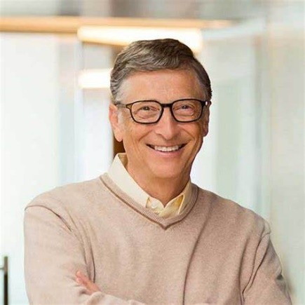
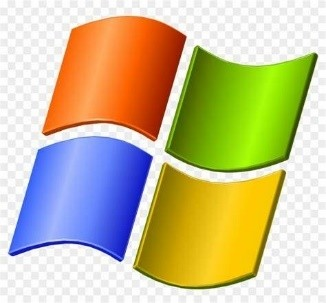
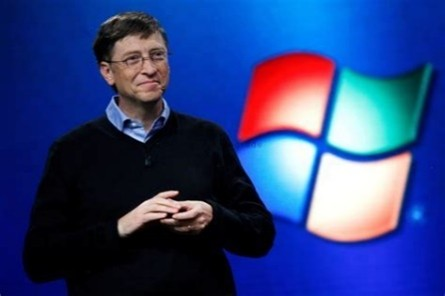
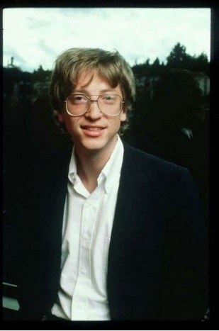
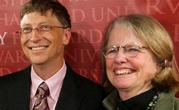

(William Henry Gates III; Seattle, 1955 - Redmond, Washington, 2023) Empresario y programador estadounidense. Fundador de Microsoft Corporation, una de las empresas más influyentes del mundo en el campo de la informática. Su visión y liderazgo transformaron la industria tecnológica global.

Es difícil juzgar hasta qué punto fue suerte o genial intuición advertir que, en la eclosión de la informática de consumo, había un mercado tan valioso en la fabricación de ordenadores (hardware) como en la creación del sistema operativo y de los programas que habían de emplearse en ellos (software). Lo cierto es que, mientras los fabricantes competían duramente por el hardware, una serie de circunstancias llevaron a que su sistema operativo se extendiese hasta quedar sin apenas competencia. De hecho, a menudo se ha acusado a Microsoft de prácticas monopolísticas, y a su fundador de falta de verdadera creatividad. Pero, aun admitiéndolo, deberá reconocerse que su contribución efectiva a la popularización de la informática (y a la vertiginosa escalada tecnológica que ha conllevado) fue inmensa.
Bill Gates nació en una familia acomodada que le proporcionó una educación en centros de élite como la Escuela de Lakeside (1967-73) y la Universidad de Harvard (1973-77). Siempre en colaboración con su amigo Paul Allen, se introdujo en el mundo de la informática formando un pequeño equipo dedicado a la realización de programas que vendían a empresas o administraciones públicas. En 1975 se trasladaron a Alburquerque (Nuevo México) para trabajar suministrando a la compañía MITS una serie de programas susceptibles de ser utilizados con el primer microordenador, el Altair, para el cual habían desarrollado una versión del lenguaje de programación BASIC. Ese mismo año fundaron en Alburquerque su propia empresa de producción de software informático, Microsoft Corporation, con Bill Gates como presidente y director general. Su negocio consistía en elaborar programas adaptados a las necesidades de los nuevos microordenadores y ofrecérselos a las empresas fabricantes más baratos que si los hubieran desarrollado ellas mismas. Cuando, en 1979, Microsoft comenzó a crecer (contaba entonces con dieciséis empleados), Bill Gates decidió trasladar su sede a Seattle.
A principios de la década de 1970, la invención del microprocesador permitió abaratar y reducir el tamaño de las gigantescas computadoras existentes hasta entonces. Era un paso decisivo hacia un sueño largamente acariciado por muchas empresas punteras en el sector tecnológico: construir ordenadores de tamaño y precio razonable que permitiesen llevar la informática a todas las empresas y hogares. El primero en llegar podría iniciar un negocio sumamente lucrativo y de enorme potencial. Era impensable que una empresa como Microsoft, dedicada solamente al software (sistemas operativos y programas) pudiese jugar algún papel en esta carrera entre fabricantes de hardware, es decir, de máquinas.
Y así fue al principio: una competición entre fabricantes de ordenadores no demasiado honesta, pues hubo más de un plagio. A mediados de los años setenta, en un garaje atestado de latas de aceite y enseres domésticos, Steve Jobs y Stephen Wozniak diseñaron y construyeron una placa de circuitos de computadora, toda una muestra de innovación y de imaginación. Al principio tenían la intención de vender sólo la placa, pero pronto se convencieron de la conveniencia de montar una empresa, Apple, y vender ordenadores. En 1977 empezaron a comercializar la segunda versión de su computadora personal, el Apple II, que se vendía con un sistema operativo también creado por Apple: un hito histórico que marca el nacimiento de la informática personal. Bastante ingenuamente, Apple cometió el error de dar a conocer a otras empresas las especificaciones exactas del Apple II. Para desarrollar su primer ordenador personal, la empresa IBM copió y adaptó la arquitectura abierta del ordenador de Apple y escogió el microprocesador Intel 8088, que manejaba ya caracteres de 16 bits. De este modo, en 1981, IBM pudo lanzar su primer PC (Personal Computer, ordenador personal). Pero el sistema operativo de su PC, imprescindible para su funcionamiento, no había sido creado por IBM, sino por Microsoft. Un año antes, en 1980, Bill Gates había llegado a un acuerdo con IBM para suministrarle un sistema operativo adaptado a sus ordenadores personales, el MS-DOS, que desde 1981 iría instalado en todos los ordenadores de la marca. IBM obtuvo un gran éxito comercial con su PC. Con un precio que, con el paso de los años, sería cada vez más asequible, cualquier consumidor podía comprar una computadora de tamaño reducido, cuyas aplicaciones no hacían sino aumentar, y que abarcaban tanto el ocio como múltiples actividades laborales. Pero IBM también cometió errores en el uso de la patente. Muchas empresas, conscientes del gran boom que se avecinaba, se lanzaron a la fabricación y comercialización de PC compatibles, llamados en la jerga informática clónicos, más económicos que los de IBM. El mercado se inundó de ordenadores personales compatibles con el de IBM que funcionaban con el sistema operativo de Microsoft, que podía venir instalado o adquirirse por separado, porque, aunque IBM lo había encargado, el MS-DOS no era de su propiedad: había cedido los derechos de venta a Microsoft. Por otro lado, aparte de las empresas y administraciones, no siempre los usuarios adquirían la licencia del MS-DOS. Era sencillísimo conseguir una copia e instalarlo sin pagar, hecho que favoreció aún más su difusión.

Aún existían otras opciones, pero se quedaron en minoritarias: gracias a su bajo coste, la combinación PC más MS-DOS acabó copando el mercado y convirtiéndose en el estándar. Mientras los fabricantes de ordenadores intentaban reducir costes, entregados a una guerra de precios de la que nadie pudo sacar una posición dominante, una empresa de software, la de Bill Gates, se hizo con prácticamente todo el mercado de sistemas operativos y buena parte del de programas. A partir de ese momento, la expansión de Microsoft fue espectacular. Y no sólo porque los PC necesitaban un sistema operativo para funcionar, sino también porque los programas y aplicaciones concretas (un procesador de textos, un hoja de cálculo, un juego) se desarrollan sobre la base de un sistema operativo en concreto, y ese sistema era el MS-DOS. Las distintas empresas de software (y entre ellas la misma Microsoft) podían desarrollar, por ejemplo, distintos procesadores de textos, compitiendo entre ellas para agradar al usuario. Pero como la inmensa mayoría de usuarios tenía MS-DOS, desarrollaban programas para funcionar con MS-DOS, y acababan por hacer un favor a Microsoft, que podía presumir de que sobre su sistema operativo podían funcionar todos los programas imaginables: los suyos y casi todos los de la competencia. Esa retroalimentación viciosa era el fabuloso activo de Microsoft, y Bill Gates supo conservarlo. El MS-DOS, sin embargo, era un entorno poco amigable, cuyo manejo requería el conocimiento de comandos que se introducían a través del teclado. Con el lanzamiento en 1984 del ordenador personal Macintosh, Apple pareció tomar de nuevo la delantera. Su sistema de ventanas supuso un salto cualitativo; su interfaz simulaba la distribución de una mesa de trabajo por medio de iconos. Un pequeño aparato, el ratón, cuyo movimiento se reflejaba en la pantalla con un icono parpadeante, permitía recorrerla en busca del documento o programa buscado. En lugar de tener que recordar los comandos de cada una de las operaciones y teclearlos en cada momento, bastaba acudir a los listados de acciones posibles y hacer clic con el ratón sobre la opción elegida. Por el momento, aquellas innovaciones no parecían hacer sombra a Bill Gates. En 1983 Paul Allen dejó Microsoft, aquejado de una grave enfermedad. Y cuando, en 1986, Microsoft salió a la Bolsa, las acciones se cotizaron tan alto que Bill Gates se convirtió en el multimillonario más joven de la historia. Volcado en un proceso de innovación tecnológica acelerada, y en su caso imitando más el Macintosh de Apple que innovando, Gates lanzó una interfaz gráfica para MS-DOS llamada Windows: Windows 3.0 en 1990 y Windows 3.1 en 1992. No era, en realidad, un nuevo sistema operativo, sino, como se ha dicho, una interfaz gráfica con ratón, iconos y ventanas bajo la que seguía corriendo el viejo MS-DOS, pero fue muy bien recibido por los usuarios, que disponían finalmente de un sistema tan intuitivo como el de Macintosh pero mucho más económico al funcionar sobre un PC, gracias a lo cual se impuso fácilmente en el mercado. El enorme éxito llevó a la verdadera renovación que fue Windows 95 (en cuya campaña de promoción a escala mundial asumió el propio Gates el papel de profeta de la sociedad cibernética como personificación de Microsoft), al que seguirían Windows 98 y las sucesivas versiones de este sistema operativo, de entre las que sobresale Windows XP (2001), el primero cien por cien de nuevo cuño, que dejaba completamente de lado el antiguo MS-DOS.

Entretanto, el negocio no había cesado de crecer (de los 1.200 empleados que tenía en 1986 hasta más de 20.000 en 1996), y, con la generalización de Windows, Bill Gates pasó a ejercer un virtual monopolio del mercado del software mundial, reforzado por su victoria en el pleito de 1993 contra Apple, que había demandado a Microsoft por considerar que Windows era un plagio de la interfaz gráfica de su Macintosh. Desde 1993 embarcó a la compañía en la promoción de los soportes multimedia, especialmente en el ámbito educativo. Además de Windows, muchos de los programas y aplicaciones concretas más básicas e importantes producidas por la empresa (el paquete ofimático Microsoft Office, por ejemplo) eran siempre las más vendidas. Surgieron muchas voces críticas que censuraban su posición monopolística, y en numerosas ocasiones Microsoft fue llevada por ello a los tribunales por empresas competidoras y gobiernos, pero nada logró detener su continua ascensión.
El talento de Gates se ha reflejado en múltiples programas informáticos, cuyo uso se ha difundido por todo el mundo como lenguajes básicos de los ordenadores personales; pero también en el éxito de una empresa flexible y competitiva, gestionada con criterios heterodoxos y con una atención especial a la selección y motivación del personal. Las innovaciones de Gates contribuyeron a la rápida difusión del uso de la informática personal, produciendo una innovación técnica trascendental en las formas de producir, transmitir y consumir la información. El presidente George Bush reconoció la importancia de la obra de Gates otorgándole la Medalla Nacional de Tecnología en 1992. Su rápido enriquecimiento ha ido acompañado de un discurso visionario y optimista sobre un futuro transformado por la penetración de los ordenadores en todas las facetas de la vida cotidiana, respondiendo al sueño de introducir un ordenador personal en cada casa y en cada puesto de trabajo; este discurso, que alienta una actitud positiva ante los grandes cambios sociales de nuestra época, goza de gran audiencia entre los jóvenes de todo el mundo por proceder del hombre que simboliza el éxito material basado en el empleo de la inteligencia (su libro Camino al futuro fue uno de los más vendidos en 1995). Los detractores de Bill Gates, que también son numerosos, le reprochan, no sin razón, su falta de creatividad (ciertamente su talento y sus innovaciones no son comparables a las de un Steve Jobs, y más bien siguió los caminos que abría el fundador de Apple), y critican asimismo su política empresarial, afirmando que se basó siempre en el monopolio y en la absorción de la competencia o del talento a golpe de talonario. A los críticos les gusta subrayar un hecho totalmente real, pese a que parezca una leyenda urbana: ni siquiera el MS-DOS es obra suya. Bill Gates lo compró por 50.000 dólares a un programador de Seattle llamado Tim Paterson, le cambió el nombre y lo entregó a IBM. En la actualidad, Microsoft sigue siendo una de las empresas más valiosas del mundo, pese a haber perdido diversas batallas, especialmente la de Internet y la de los sistemas operativos para teléfonos móviles, que lidera ahora Google (Sergei Brin y Larry Page), otro gigante tan valioso como Microsoft. Frente al dinamismo de la era de Internet, en la que surgen y se convierten rápidamente en multimillonarias nuevas ideas como la red social Facebook, de Mark Zuckerberg, la empresa de Gates parece haber quedado algo anquilosada, aunque no se pone en duda la solidez de su posición. Tampoco ello es exclusiva responsabilidad de Bill Gates, que ya en el año 2000 cedió la presidencia ejecutiva de Microsoft a Steve Ballmer y pasó a ser arquitecto jefe de software para centrarse en los aspectos tecnológicos. Bill Gates había contraído matrimonio en 1994 con Melinda French, con la que tendría tres hijos. En el año 2000 creó, junto con su esposa, la Fundación Bill y Melinda Gates, institución benéfica dedicada a temas sanitarios y educativos cuya espléndida dotación económica procede mayormente de su fortuna personal. No en vano el fundador de Microsoft es un habitual de las listas anuales de la revista Forbes: en 2014 la había encabezado ya en quince ocasiones como el hombre más rico del planeta. En 2008, Bill Gates abandonó definitivamente Microsoft para dedicarse íntegramente a sus labores en la fundación, que había recibido el Premio Príncipe de Asturias de Cooperación Internacional en 2006. Si antes fue una figura discutida, esta nueva etapa como filántropo despierta más bien unánime admiración: al igual que lo fue su empresa, su fundación es la más grande del mundo por lo que respecta a la cuantía de sus aportaciones económicas a toda clase de programas de ayuda, investigación y desarrollo.
La tecnología avanza de manera constante y atraviesa la vida de las personas. En cualquier ámbito y momento de su vida, los celulares están presentes. A pesar de ello, los especialistas remarcan el peligro de esta situación, la cual puede ser perjudicial, en especial, para los niños. Uno de los expertos en el tema es Bill Gates. Es que el magnate, quien cofundó Microsoft, dio su opinión sobre el tema en una entrevista con el medio británico The Mirror y puntualizó sobre el uso desmedido de los celulares y en qué momento del día debería estar prohibido. Bill Gates posó su mirada en el uso desmedido de los celulares en los niños Al ahondar en el tema, Gates aclaró que durante el almuerzo y la cena, el celular no debe estar al alcance de los niños por la simple razón de que ellos deben sociabilizar con el resto de las personas y no estar inmersos en una realidad virtual que los encierra en su propio mundo. Esta aseveración del filántropo no llamó la atención, ni mucho menos: en reiteradas ocasiones, Gates explicó que la tecnología debe ser empleada de manera responsable y con un fin determinado. Por otra parte, el desarrollador de software explicó que hasta los 14 años no es aconsejable darle el poder a un niño para que utilice un celular. “No tenemos teléfonos móviles en la mesa cuando comemos, no les dimos teléfonos móviles a nuestros hijos hasta los 14 años y se quejaron de que otros niños los habían adquirido antes”, deslizó Gates en diálogo con The Mirror. El uso excesivo de los celulares es un problema que parece sin solución para los padres. A pesar de las advertencias para que su uso no sea constante, la tecnología hace su trabajo para hipnotizarlos con juegos y aplicaciones que los mantiene atentos durante gran parte de su día. Padre de Jennifer, Rory y Phoebe, Bill dio más detalles de cómo debe esquematizarse el tiempo para que el celular no incida hasta en las horas de descanso recomendadas para que una persona rinda durante el día: “A menudo establecemos un tiempo después del cual no hay tiempo frente a la pantalla y, en su caso, eso les ayuda a conciliar el sueño a una hora razonable”.
El avance de la inteligencia artificial le brinda soluciones a las personas, aunque puede afectar a algunas profesiones que, según Bill Gates, corren riesgo de quedar obsoletas. El terreno de la docencia está en la mira del filántropo y explicó por qué la IA puede afectarla. “Las herramientas de inteligencia artificial llegarán a esa capacidad, y serán buenos tutores, como cualquier humano”, relató en una conferencia que brindó en San Diego, California. Por último, cerró, de manera categórica, poniendo sobre el tapete la posibilidad de que los humanos sean desplazados en el largo plazo: “En poco tiempo, los chatbots de IA serán más asequibles y accesibles. Esto debería ser un nivelador de educación, ya que tener acceso a un tutor humano es demasiado caro para la mayoría de los estudiantes”. Bill Gates: La mente maestra detrás de Microsoft
¿Qué niño prefiere las enciclopedias a un balón de fútbol? Pues, el mismo que ahora todos conocemos como Bill Gates. Bill Gates nació en Seattle, en una familia con recursos, ya que su padre era abogado y su madre trabajaba en un banco. Pero en lugar de solo disfrutar de los beneficios que eso podría brindar, estaba obsesionado con la lectura, algo que su familia siempre alentaba. En vez de correr por el parque con sus amigos, el pequeño Bill estaba pegado a sus libros. A los siete años, ya se los había leído todos y sus habilidades matemáticas eran sobresalientes.
A los 13 años, Billy (como lo llamaban sus amigos) fue inscrito en la escuela Lakeside, y ahí fue donde conoció a su primer amor… ¡una computadora! Gates y su amigo Paul Allen trataban esa computadora como si fuera su nuevo juguete favorito. Incluso crearon un programa para organizar los horarios de la escuela. Y como si eso fuera poco, también hicieron un juego de tic-tac-toe; era tan básico que hasta un mono podría ganarle a la máquina. Cuando tenía 15 años, Bill empezó a trabajar para una empresa grande, TRW, mejorando y optimizando su software. ¡A la mayoría de los chicos de esa edad ni siquiera se les permite llegar tarde a casa! Dos años después, Bill y su mejor amigo Paul fundaron una pequeña empresa llamada Traf-O-Data. Su idea era usar un chip de Intel para contar coches en las calles y proporcionar datos de tráfico a las municipalidades. Aunque no se hicieron millonarios con eso, quedó claro que Gates tenía una lluvia de ideas innovadoras. Llegó el momento en la vida de Bill Gates en que tuvo que determinar su futura profesión. Superó los exámenes SAT, entró a Harvard y aunque empezó con leyes, no duró mucho. Las computadoras siempre llamaron su atención. Aunque su empresa Traf-O-Data no llegó a la fama, Bill no se rindió. Como dicen, si al principio no tienes éxito, ¡programa, programa otra vez! Fue exactamente lo que hizo él.

En 1975, las cosas se pusieron interesantes; apareció una máquina llamada MITS Altair 8800, un ordenador con cerebro de Intel 8080. Al observar el panorama, Bill y Paul se dieron cuenta de que había llegado el tiempo de marcar un hito en la industria informática. Entonces, Bill dejó Harvard. Sus padres, al notar su entusiasmo, decidieron apoyarlo en su decisión. Y así, en vez de fiestas universitarias, Bill y Paul se lanzaron al emocionante mundo del software y dieron el primer paso para crear algo que todos, incluso tú y yo, terminaríamos usando. Primera computadora personal y primera versión del sistema operativo Windows Bill y Paul crearon un lenguaje llamado BASIC que era compatible con la Altair 8800. Así, lograron que la computadora tuviera su propio idioma y entendiera las órdenes de los usuarios. Luego en 1983, Bill Gates visualizó una nueva forma de interactuar con las computadoras, que iba más allá de las simples pantallas de texto verde que eran comunes en ese entonces. Pensó en un sistema operativo que utilizaba una interfaz gráfica, con ventanas y diferentes colores, para hacer la computación más accesible y fácil de usar. Dos años más tarde, Microsoft lanzó Windows 1.0, un sistema operativo que introdujo estas innovaciones y cambió radicalmente la forma en que se usaban las computadoras. Éxito internacional de Microsoft y expansión de la empresa Cada nueva versión de Windows era como un capítulo de una serie de televisión: nunca se sabía qué sorpresa vendría después. En 1989, Microsoft presentó Office y en 1995, Internet Explorer. Microsoft extendió su influencia más allá de las fronteras de Estados Unidos. La compañía llevó sus productos a nivel internacional, ajustándolos para satisfacer las demandas y regulaciones locales en distintas partes del mundo. En el año 2000, Bill Gates cedió su puesto de CEO de Microsoft a Steve Ballmer y se retiró de las operaciones diarias de la empresa para centrarse en la filantropía. Aunque ya no está al frente de Microsoft, sigue siendo un accionista y asesor para la compañía. Si quieres seguir los pasos de gigantes tecnológicos como Bill Gates, ahora es tu oportunidad de empezar desde cero. Inscríbete en nuestro curso online de IT Start, aprende las esencias de las profesiones más cotizadas en TI y elige la que más te apasione. Bill empezó su viaje en la tecnología jugando con sistemas y creando programas. Al igual que él, puedes experimentar con las cuatro áreas más populares de IT, como Análisis de Datos, Ciencia de Datos, Power Bi, Full Stack Python y Java. Al final de la primera fase, podrás decidir en qué área quieres especializarte.
En 1987, Bill conoció a Melinda French, con quien se casó en 1994. Juntos criaron a tres hijos: Jennifer, Rory y Phoebe. Aunque tomaron la decisión de divorciarse en 2021, los Gates han dejado una huella imborrable en el mundo de la filantropía. La hija mayor, Jennifer, estudió biología humana en Stanford y se comprometió con el jinete Nayel Nassar. Rory Gates estudió informática y economía en la Universidad de Duke, una de las universidades privadas con mayor prestigio en Estados Unidos. Rory ha mantenido un perfil bajo; ha participado en causas filantrópicas de la familia y es conocido por su compasión y empatía. Phoebe, la más joven, asistió a una escuela privada en Seattle y también ha estado involucrada en iniciativas filantrópicas. Aunque son parte de una familia prominente, los hijos de Bill y Melinda han optado por mantener sus vidas privadas.

La relación con su madre tuvo un impacto en la decisión de Bill Gates de dedicarse a la filantropía. Mary Gates tenía una fuerte creencia en la responsabilidad social, en la importancia de contribuir a la comunidad y enseñaba estos valores a Bill desde que era niño. La muerte de su madre en 1994 fue un momento doloroso y reflexivo para Bill. Esta pérdida personal lo llevó a reconsiderar el impacto que quería dejar. Al poco tiempo de la muerte de Mary Gates, Bill y Melinda empezaron a participar activamente en iniciativas filantrópicas, lo que eventualmente les motivó a crear la Fundación Bill y Melinda Gates en 1994. La amistad de Gates con Warren Buffett, un inversionista y empresario multimillonario, quien decidió donar la mayoría de su riqueza a causas benéficas, también impactó la decisión de Bill de comprometerse con la filantropía. El libro The Global Health 2035 Report de Dean Jamison fortaleció la convicción Bill Gates de que invertir en salud no solo salva vidas, sino que también mejora las condiciones económicas. La fundación ha invertido miles de millones de dólares estadounidenses en la lucha contra enfermedades como la poliomielitis, la malaria y ha impulsado programas de vacunación en países donde los recursos son limitados. También se ha dedicado a mejorar la educación, no solo financiando infraestructuras, sino también apoyando programas de formación para profesores y becas para estudiantes. Además, ha tomado medidas significativas para aliviar la pobreza y el hambre, impulsando la innovación agrícola y dando acceso a recursos y tecnologías en regiones desfavorecidas.
Bill Gates es una persona de muchas dimensiones. Su legado en la tecnología, así como su contribución a la filantropía lo convierten en un ejemplo notable de lo que cada uno de nosotros puede lograr con visión y perseverancia no solo en un campo, sino en múltiples aspectos de la vida global